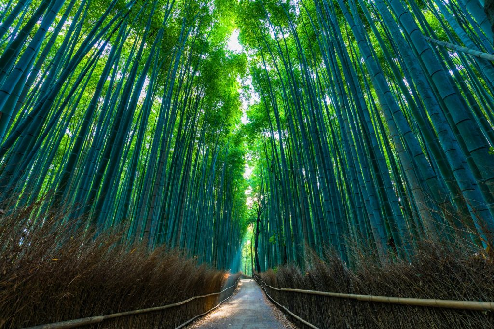
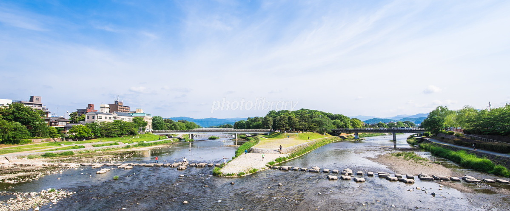

嵯峨野竹林の小道

嵯峨野竹林の小道は長さ200メートルと短めながらも、古都の趣を存分に感じられるスポット。天龍寺の北門からほど近いため、多くの人があわせて訪れます。こちらも嵐山を代表する観光名所です。
鴨川

緑豊かな自然に溢れ、普段は学生や親子が川を眺めていたり、飛び石で遊ぶ姿が見られ、市民の憩いの場として親しまれています。最近では、映画やアニメのロケ地としても有名になっており、見どころ満載のスポットとなっています